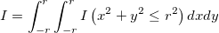
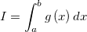
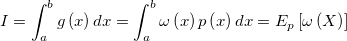
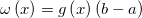
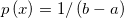
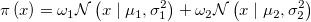
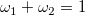

Origin C allows you to program simulations using the Monte Carlo methods in Origin. Two samples are provided below:
The two simple examples below serve to illustrate how we can draw samples from a specific distribution. These examples belong to Markov chain Monte Carlo (MCMC). In the first example, we try to evaluate an integral which in turn can be used to obtain an approximate value for PI. Many computations of integral require drawing samples from a Uniform distribution. In the second example, we demonstrate how to draw a sample from a mixture of distributions.
If we want to calculate the integral

It might be easy to calculate this integral directly. However, with simulation method, we can also reach a satisfying result. In fact, it turns out many integrals can be evaluated by Monte Carlo simulation.
In order to evaluate the integral

We can rewrite it as

where


So this integral is actually an expectation of a function of a random variable with uniform distribution over (a,b). By law of large number, we can use average to approximate expectation.
Thus we can evaluate that specified integral by following OC code.
// This function calculates a specific integral int MC_integral(const int S = 100000) { int r = 2; vector xs(S), ys(S); unifrnd(xs, S, -r, r); unifrnd(ys, S, -r, r); // count the number of points (xs[i], ys[i]) that lies inside the circle // xs[ii]*xs[ii]+ys[ii]*ys[ii]<=r*r int sum; for(int ii=0; ii<S; ii++) if(xs[ii]*xs[ii]+ys[ii]*ys[ii]<=r*r) sum++; double I_hat = sum*4.0*r*r/S; // output the result to the screen out_double("The value of Integral is I_hat = ",I_hat); return true; }
The result is I_hat = 12.5664. Looking at the below figure, we can easily see what we really calculated is the area of a circle (the blue region). Therefore we can use this method to obtain the approximate value of PI, which is 3.1416 in this case (note that I_hat = PI*r*r).
Sampling from a Gaussian distribution is easy, but it might be tricky to generate a sample from mixture of Gaussians. For example,

where

We cannot simply draw two random values from the two Gaussian distribution respectively, and then sum them up in a weighted way. We can however use the Metropolis Hastings (MH) algorithm to do this job.
Select arbitrarily an irreducible transition probability q(x,x'), which is often called proposal distribution, and a function α(x,x') valued in (0,1]. For any pair (x,x') (x is not equal to x'), define p(x,x') = q(x,x')α(x,x'). In this way, we get a transition kernel p(x,x'). What we are really interested in is the case in which target distribution π(x) is stationary (in Bayesian inference, we know this distribution is typically a posterior). A useful choice of α(x,x') is α(x,x') = min{1, π(x')q(x',x)/π(x)q(x,x')}, which would help to make π(x) be stationary. If the proposal distribution is symmetric, i.e. q(x',x)=q(x,x'), we have Metropolis Hastings algorithm, in which α(x,x') = min{1, π(x')/π(x)}.
You can convince yourself by executing the following code with a worksheet active in Origin. The results will be placed in the active worksheet.
// This function served to draw sample from a mixture of two Gaussians. // the Parameter "Nsamples" specifies the number of simulation sample int MC_mix(const int Nsamples = 5000) { int ii; vector xtemp(1); // specify target model: eg. // in this case, it's weights[0]*normal(mu[0],sigma[0]^2)+weights[1]*normal(mu[1],sigma[1]^2) vector weights = {0.3,0.7}; vector mu = {0,10}; vector sigma = {2,2}; // specify proposal distribution: normal(0,sigma_prop^2) // you can use other "sigma_prop", but make sure it's suitable("similar" to the target distribution) double sigma_prop = 10; // initial state of Markov Chain // you can also use other initial states double xinit; unifrnd(xtemp, 1, 0, 1); xinit = 20.0*xtemp[0]; ////////////////////////////////////////////// // Metropolis-Hastings algorithm vector samples(Nsamples); double logpOld, xprime, logpNew, alpha; target_log(xinit, weights, mu, sigma, logpOld); // get probability of target distribution at initial state double x = xinit; for(ii=0; ii<Nsamples; ii++) { proposal(x, sigma_prop, xprime); // get probability of proposal distribution when at state "x" target_log(xprime, weights, mu, sigma, logpNew); // get probability of target distribution when at state "xprime" alpha = exp(logpNew-logpOld); // calculate function alpha(logpNew,logpOld) double r = min(1.0, alpha); unifrnd(xtemp, 1, 0, 1); if(xtemp[0]<r) { x = xprime; logpOld = logpNew; } samples[ii] = x; } //output the "samples" to a worksheet Worksheet wks =Project.ActiveLayer(); Dataset ds(wks, 0); ds = samples; return true; } // calculate log-transformation of probability of target distribution int target_log(const double x, const vector mixWeight, const vector mu, const vector sigma, double &p) { p = 0.0; double ptemp; int k = mixWeight.GetSize(); for(int ii=0; ii<k; ii++) { normpdf(x, mu[ii], sigma[ii], ptemp); p = p + mixWeight[ii] * ptemp; } p = log(p); return true; } // generate random value of proposal distribution int proposal(const double x, const double sigma_prop, double &xp) { vector rx(1); normrnd(rx, 1, 0, 1); xp = x + rx[0]*sigma_prop; return true; } // calculate propability of normal distribution int normpdf(const double x, const double mu, const double sigma, double &p) { p = exp(-(x-mu)*(x-mu)/(2*sigma*sigma))/(sqrt(2*pi)*sigma); return true; }
We show the result in the following figure. The line represents the target distribution, i.e. π(x)=0.3*N(0,2) + 0.7*N(10,4). The four bar plots represent sample with N = 100, 500, 1000, 5000, respectively. With N = 5000, the sample we got fits the target distribution well.